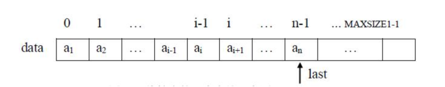
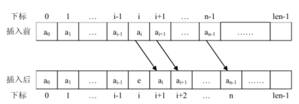
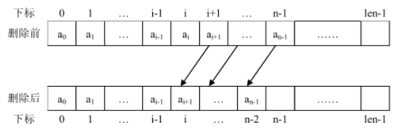
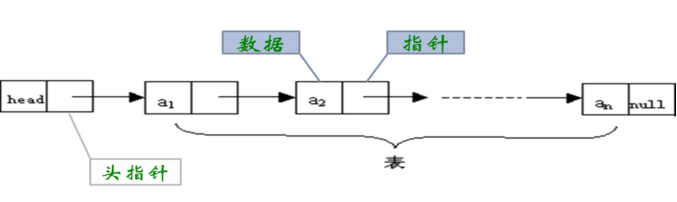

线性表（linear list） ）
线性表是n个类型相同数据元素的有限序列，通常记作（a 0 , a 1 , …a i-1 , a i , a i+1 …,a n-1 ）。
1.相同数据类型
在线性表的定义中，我们看到从a 0 到a n-1 的n个数据元素是具有相同属性的元素。
比如说可以都是数字，例如(23, 14, 66, 5, 99)；
也可以是字符，例如(A, B, C, … Z)；
当然也可以是具有更复杂结构的数据元素，例如学生、商品、装备。
相同数据类型意味着在内存中存储时，每个元素会占用相同的内存空间，便于后续的查询定位。
2.序列(顺序性)
在线性表的相邻数据元素之间存在着序偶关系，
即a i-1 是a i 的直接前驱，则a i 是a i-1 的直接后续，
同时a i 又是a i+1 的直接前驱，a i+1 是a i 的直接后续。
唯一没有直接前驱的元素a 0 一端称为表头，
唯一没有后续的元素a n-1 一端称为表尾。
除了表头和表尾元素外，任何一个元素都有且仅有一个直接前驱和直接后继。
3.有限
线性表中数据元素的个数n定义为线性表的长度，n是一个有限值。
当n=0 时线性表为空表。
在非空的线性表中每个数据元素在线性表中都有唯一确定的 序号， 例如a 0 的序号是 0，a i 的序号是i。
在一个具有n > 0 个数据元素的线性表中，数据元素序号的范围是[0, n-1]。
生活案例：冰糖葫芦、多个学生分数、多个学生数据

线性表的逻辑结构

具体描述参看上面线性表的定义
线性表的存储结构
1.顺序表----顺序存储结构

特点：在内存中分配连续的空间，只存储数据，不需要存储地址信息。位置就隐含着地址。
优点：节省存储空间；
按照索引查找效率高
假设线性表的每个数据元素需占用K个存储单元，并以元素所占的第一个存储单元的地址作为数据元素的存储地址。
则线性表中序号为i的数据元素的存储地址LOC(a i )与序号为i+1 的数据元素的存储地址LOC(a i+1 )之间的关系为
LOC(a i+1 ) = LOC(a i ) + K
通常来说，线性表的i号元素a i 的存储地址为
LOC(a i ) = LOC(a 0 ) + i×K
其中LOC(a 0 )为 0 号元素a 0 的存储地址，通常称为线性表的起始地址。
缺点：
删除、添加需要大量移动元素，效率低；
按照内容查询元素，需要逐个比较判断，效率低下。
如果初始分配空间大，实际存储元素少，也会导致空间的浪费


举例：长度为n的数组中删除元素，假设每个元素删除的概率是相同的，问时间复杂度是？
删掉第n个元素，需要移动0个元素
删掉第n-1个元素，需要移动1个元素
删掉第n-2个元素，需要移动2个元素
....
删掉第2个元素，需要移动n-2个元素
删掉第1个元素，需要移动n-1个元素
所以平均时间频度是：0*1/n + 1*1/n + 2*1/n + 3*1/n + + (n-1)*1/n = (n-1)*n/2 * 1/n = (n-1)/2
T(n) = (n-1)/2
T(n)= O(n)
2.链表----链式存储结构

特点：在内存中分配不连续的空间，每个元素节点中，专门增加了空间来存储下个元素的地址。最后一个节点的地址值为null 。
优点：删除、添加不需要移动元素，效率高。（但是需要先定位到元素上）
缺点：每个元素节点中，专门增加了空间来存储下个元素的地址，占用更多空间。
每个节点地址不连续、无规律，导致按照索引查询效率低下。
线性表的操作
/**
* 线性表接口
* @author Administrator
*
*/
public interface List {
// 返回线性表的大小，即数据元素的个数。
public int size();
// 返回线性表中序号为 i 的数据元素
public Object get(int i);
// 如果线性表为空返回 true，否则返回 false。
public boolean isEmpty();
// 判断线性表是否包含数据元素 e
public boolean contains(Object e);
// 返回数据元素 e 在线性表中的序号
public int indexOf(Object e);
// 将数据元素 e 插入到线性表中 i 号位置
public void add(int i, Object e);
// 将数据元素 e 插入到线性表末尾
public void add(Object e);
// 将数据元素 e 插入到元素 obj 之前
public boolean addBefore(Object obj, Object e);
// 将数据元素 e 插入到元素 obj 之后
public boolean addAfter(Object obj, Object e);
// 删除线性表中序号为 i 的元素,并返回之
public Object remove(int i);
// 删除线性表中第一个与 e 相同的元素
public boolean remove(Object e);
// 替换线性表中序号为 i 的数据元素为 e，返回原数据元素
public Object replace(int i, Object e);
}